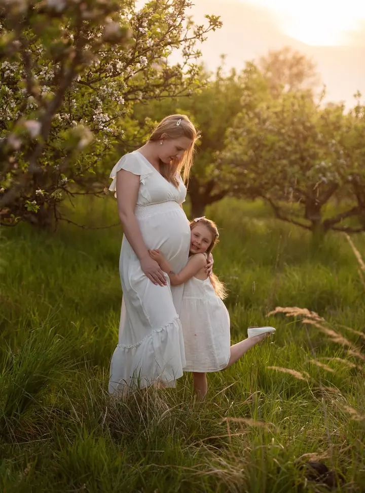

Rodina a lifestyle
Hodina focení venku, při které můžete být spolu sami sebou. Dostanete 15 upravených fotografií barevně i černobíle, newborn lifestyle focení patří sem také.

Jmenuji se Simona Fialová a v Liberci fotím rodiny, maminky v očekávání a portréty. Nejvíc mě baví váš smích, láska, překvapení a všechny ty maličkosti, které dělají život.
Rezervovat termínJsem fotografka z Liberce a nejčastěji fotím rodiny, těhotenská focení a portréty. Fotím venku, v sadech, na loukách a ve slunečnicových polích, kde si děti můžou hrát a dospělí přestanou myslet na foťák.


Na focení nikoho nestavím do strnulých póz. Chci, abyste se smáli, objímali se a chovali se k sobě tak jako doma. Fotky pak dostanete barevné i černobílé, ať si vyberete, co je vám bližší.
Kromě rodin fotím partnerská a předsvatební focení, svatby a fotky pro podnikání. Každé jaro a před Vánoci pořádám mini focení, na která se rezervuje přes můj Instagram.
Co fotím
Hodina focení venku, při které můžete být spolu sami sebou. Dostanete 15 upravených fotografií barevně i černobíle, newborn lifestyle focení patří sem také.
Klidné focení bříška, ve dvou nebo s celou rodinou. Platí stejný balíček jako u rodinného focení.
Osobní portréty v přírodě i ve městě a fotky pro vaši značku nebo podnikání.
Partnerské a předsvatební focení i celý svatební den. Ceník svatebního focení vám ráda pošlu e-mailem.
Postup
Pošlete mi e-mail nebo zavolejte a domluvíme termín. U svateb stačí vyplnit poptávku a ceník vám pošlu e-mailem.
Společně vybereme místo a ráda vám poradím, jak se na focení obléct, aby vám to spolu ladilo.
Rodinné a těhotenské focení trvá zhruba hodinu, partnerské hodinu až dvě. Platí se hned po skončení focení.
Vyberete si fotky, které upravím a pošlu vám elektronicky, barevné i černobílé. Když spěcháte, zvládnu expresní zpracování do 3 dnů.
Otázky
Balíček „15“ stojí 3 500 Kč. Obsahuje hodinu focení a 15 upravených fotografií, každá další fotka je za 150 Kč. Stejný balíček platí i pro newborn lifestyle focení.
Partnerské focení trvá 1–2 hodiny a stojí 3 500 Kč za 10 fotografií. Každá další fotka je za 200 Kč.
Ano. Cestovné účtuji 10 Kč za kilometr. Případné vstupné do míst, kde fotíme, hradíte vy.
Fotky posílám elektronicky. Když je potřebujete rychle, zpracuji je za příplatek 500 Kč do 3 dnů od chvíle, kdy mi pošlete svůj výběr.